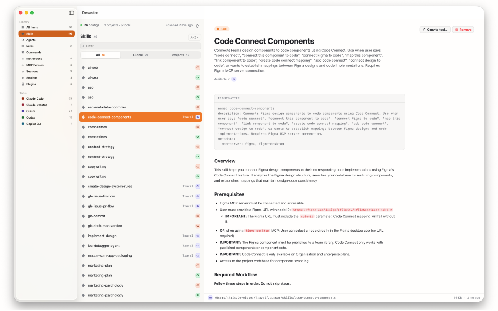

Your AI tools left config files
all over your Mac.
See every one of them.
Desastre scans your machine and shows every skill, agent, rule, command and MCP server — from Claude Code, Cursor, GitHub Copilot and 16 more tools — in one clean, native window. No setup. Just open it.
$1.99 one-time purchase · No subscription · No account · 100% local

Works with your tools
19 AI tools. One inventory.
Every tool writes config in a different place, in a different format. Desastre knows where all of them hide — including the weird ones.
Screenshots
Finally see what your machine has been collecting
Every config, one window
Global files like ~/.claude/ and per-project files like .cursor/rules/, side by side. One row per skill, agent, rule and MCP server — with the project it belongs to and every tool that can read it.
Preview anything instantly
Markdown renders with tables and code blocks. Frontmatter shows up as a clean header. JSON, TOML and YAML are syntax-highlighted. No more cat ~/.claude/skills/whatever/SKILL.md.

Copy configs between tools
Wrote a great rule for Cursor? Send it to Claude Code in one click. Desastre converts the format automatically — .mdc becomes .md, frontmatter gets adjusted — and it never overwrites anything that already exists.

How it works
Open it. That's the whole setup.
Grant access once
Pick your home folder on first launch. Desastre is sandboxed and App Store-vetted — that single grant is all it ever asks for.
It scans everything
Known global paths first, then a full sweep of your home folder for project-level configs — skipping node_modules, .git and other noise.
Browse, preview, copy
Filter by tool, kind, or scope. Preview any file. Reveal it on disk, trash what's stale, or copy it to another tool with automatic format conversion.
Guides
Where does everything actually live?
The reference we wish existed when we built Desastre — exact paths, formats and gotchas for every major AI coding tool.
Where does Claude Code store settings, skills and agents?
The full map of ~/.claude/ — and the one important file that lives outside it.
Read the guide →Where does Cursor store rules?
.cursor/rules/ vs the legacy .cursorrules, the .mdc format, and where MCP config goes.
Read the guide →Where is MCP server config stored? Every tool's path
13 tools, 13 different files and key names. The complete MCP config location table.
Read the guide →How to convert Cursor rules to Claude Code
What changes between .mdc and CLAUDE.md-world, and how to move rules in one click.
Read the guide →What is AGENTS.md?
The open standard instruction file 60,000+ repos use — which tools read it and where it goes.
Read the guide →What is CLAUDE.md?
Claude Code's memory file: global vs project vs local, and how the layers combine.
Read the guide →Where does GitHub Copilot store custom instructions?
copilot-instructions.md, .github/instructions/, agents and MCP — the full Copilot map.
Read the guide →Where does Windsurf store rules and config?
Windsurf splits config across two hidden folders. Here's both halves.
Read the guide →Where do Gemini CLI and Antigravity store config?
GEMINI.md, ~/.gemini/, and the shared-folder conflict that can eat your instructions.
Read the guide →How to find every AI config file on your Mac
Where 19 tools hide their files, how to audit them by hand — and the faster way.
Read the guide →FAQ
Questions developers ask us
Where does Claude Code store its settings and skills?
Global config lives under ~/.claude/ — skills in ~/.claude/skills/, agents in ~/.claude/agents/, instructions in ~/.claude/CLAUDE.md. The catch: MCP servers live in ~/.claude.json, outside the folder. Learn more →
Where does Cursor store its rules?
Global rules are .mdc files in ~/.cursor/rules/; each project keeps its own .cursor/rules/ folder. Older repos may still use the legacy .cursorrules file. Learn more →
Where is my MCP server configuration stored?
Everywhere, unfortunately — every tool picks a different file and a different key name. Claude Code uses ~/.claude.json, Codex uses TOML, Zed calls the key context_servers. Learn more →
What is AGENTS.md?
The open, Linux Foundation-backed standard for AI agent project instructions, used in 60,000+ repositories and read by Codex, Cursor, Windsurf, Amp, Zed and more. Learn more →
What is CLAUDE.md?
Claude Code's memory file — instructions it loads automatically every session. There's a global one, a per-project one, and a git-ignored local one, and they stack. Learn more →
Can I convert Cursor rules to Claude Code?
Yes — and you don't need a CLI script. Desastre's "Copy to tool…" converts the .mdc format, adjusts the frontmatter, and writes the file where Claude Code expects it. Learn more →
How do I find every AI config file on my Mac?
By hand: check ~19 dot-folders, Application Support, and every repo you've ever cloned. Or open Desastre and let it scan your home folder in seconds. Learn more →
Does Desastre upload my config files anywhere?
No. Everything is read locally and stays on your machine. No account, no sign-in, no telemetry on file contents — and files over 2 MB are never even loaded into memory. Privacy policy →
Which AI tools does Desastre support?
19 and counting: Claude Code, Claude Desktop, Cursor, Windsurf, Codex, GitHub Copilot, Aider, Amp, Antigravity, Gemini CLI, Augment Code, OpenCode, Continue.dev, Cline, Roo Code, Zed, Hermes, OpenClaw and Pi. See the list →
Is Desastre a subscription?
No. It's $1.99, once, on the Mac App Store. No subscription, no account, no upsell. Get it here →
Stop guessing where your configs went
Open Desastre. Let it scan. Ten seconds from now you'll know exactly what every AI tool has been writing to your machine.
$1.99 one-time · macOS 26+ · 4.7 MB